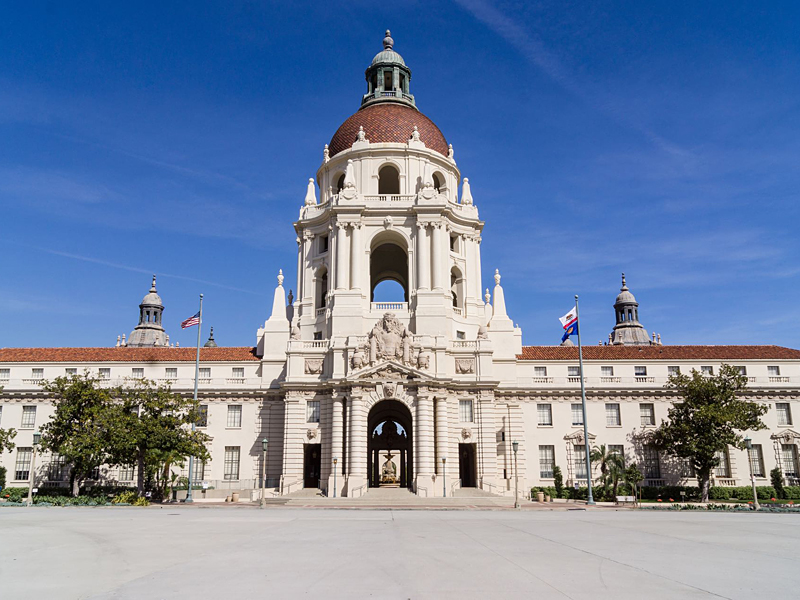
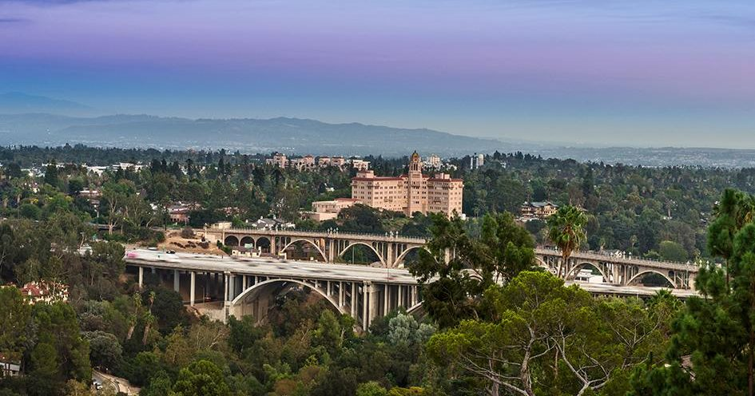
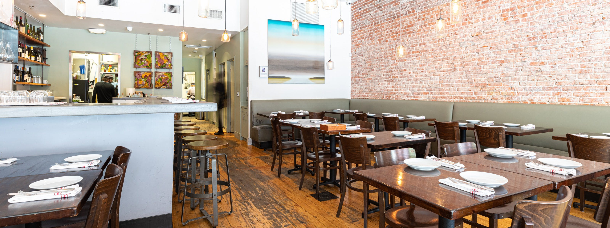
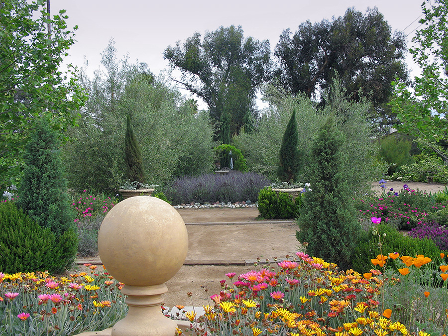
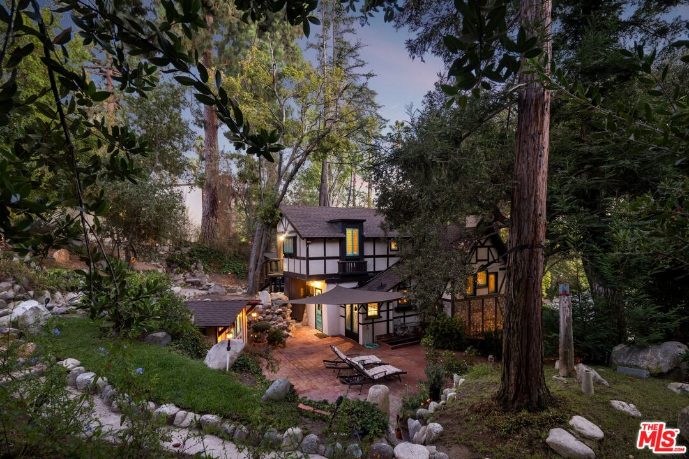

Pasadena

- Saturday ritual
- Victory Park market
- Approx. area
- 23 square miles
- Incorporated
- 1886
- Transit
- Metro A Line
City facts via the City of Pasadena. Market details via Pasadena Farmers’ Market.
A city with its own center of gravity.
Pasadena does not try to be Los Angeles, which is exactly why so many people end up here. It has its own downtown, its own Metro stops, and a century of architecture that still shapes entire streets.
Old Pasadena is the walkable commercial core. Bungalow Heaven protects its Craftsman scale. Linda Vista and San Rafael bring larger lots and architecture near the Arroyo, while Lower and South Arroyo follow the wooded ravine itself.
The honest tradeoff is distance: if daily life is anchored on the Westside, Pasadena can feel far. It is also a real city, not one neighborhood, so the experience changes dramatically from Old Pasadena to the eastern edge.
Let me give you a tour8:30 AM–12:30 PM · Victory Park
The Saturday ritual.
Victory Park’s certified farmers’ market is the kind of recurring local event that tells you more than a drive-through ever could. Produce, flowers, bread, breakfast—and a broad cross-section of Pasadena doing the ordinary weekend shop.
It is useful neighborhood research disguised as a pleasant Saturday morning: take the market slowly, then drive the nearby streets before heading toward the Arroyo or Old Pasadena.
Plan a Saturday visitWhere in LA County is Pasadena?
Pasadena sits in the San Gabriel Valley, northeast of Downtown Los Angeles and directly below the San Gabriel Mountains. Altadena is to the north, South Pasadena to the south, and the Arroyo Seco defines much of the western landscape.
The 134 and 210 cross the city, while Metro’s A Line connects multiple Pasadena stations with Downtown Los Angeles and the broader rail network.
The useful distinction: Pasadena is its own incorporated city. Saying “Pasadena” can mean a walkable block near Colorado Boulevard, a Craftsman district, or a wooded street above the Arroyo.
Places worth knowing.
A short list to start with.

Agnes
A cheese shop, restaurant, and warm brick-lined room built for a long table and an unhurried dinner.

Union
A compact Old Pasadena dining room with handmade pasta and the energy of a place people plan ahead for.

The Arbour
Seasonal California cooking in a polished room that still feels comfortable enough for a neighborhood dinner.

Pie ’n Burger
A Pasadena institution since 1963: counter stools, burgers wrapped in paper, and pie because the name made a promise.
Schools in and around Pasadena
San Rafael ElementaryPublic · K–5 · Spanish dual immersion · 4/10
McKinley SchoolPublic · TK–8 · Arts integration · 2/10
Blair High SchoolPublic · 6–12 · IB program · 4/10
Westridge SchoolPrivate · 4–12 · Not rated
Polytechnic SchoolPrivate · K–12 · Not rated
GreatSchools ratings are current as of August 2026 and may change. A rating is not the whole story; the programs above help add context. Assignments and eligibility depend on the exact address, so verify through the Pasadena Unified School District.
Parks & outdoor time

Lower Arroyo Park
Trails, mature trees, and the monumental arches of the Colorado Street Bridge overhead.

Brookside Park
Broad lawns and old trees beside the Rose Bowl, with the Arroyo trails continuing beyond it.

Arlington Garden
Three acres of water-wise Mediterranean planting, winding paths, and a free public garden made for wandering.
Pasadena houses that make the case.
From The Zonshine Edit.

Obsession No. 007
1190 N Wilson Ave
A restored 1912 Craftsman in Bungalow Heaven with exposed beams, solid maple cabinetry, a green marble fireplace, and a backyard under the trees.
Read the house story →
Obsession No. 005
485 Madeline Dr
The last surviving tea house from Busch Gardens: a 1910 storybook cottage with a working water wheel, stained glass, and gardens under the trees.
Read the house story →
Obsession No. 002
1395 Inverness Dr
A 1924 Paul R. Williams landmark with canyon views, Saltillo tile, a rolling library ladder, and a wall of firewood by the front door.
Read the house story →Pasadena on your mind? I’ve got you.
Tell me which version of Pasadena feels right. We can start with the streets, then find the house.
Let’s start here